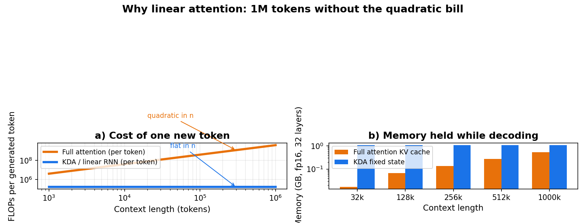
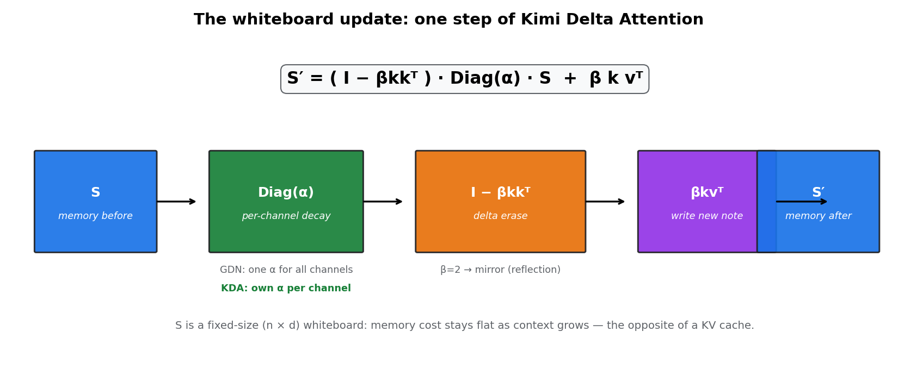
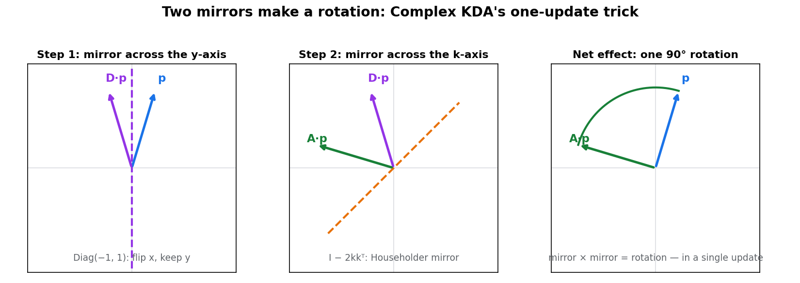
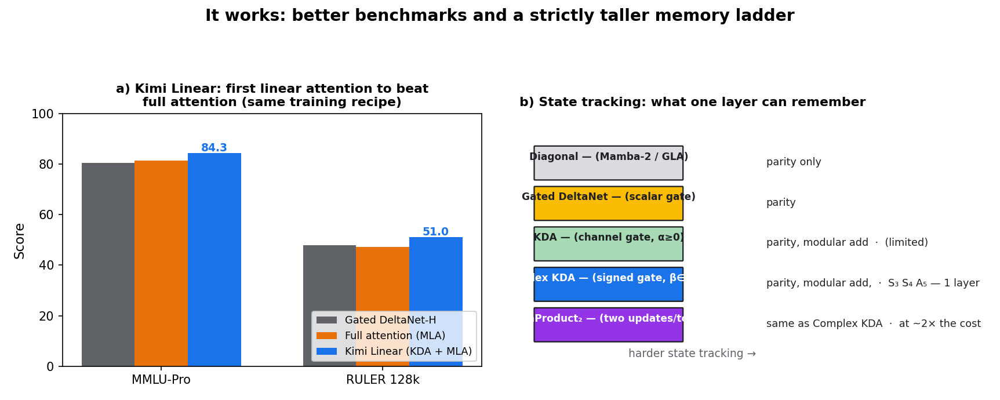

In October 2025, Moonshot AI made a startling claim: its Kimi Linear architecture — built on a new module called Kimi Delta Attention (KDA) — was the first linear attention to beat full attention under an identical training recipe. Not match it. Beat it: 84.3 vs 81.3 on MMLU-Pro, 51.0 vs 47.2 on RULER at 128k, with up to 75% less KV cache and 6× decoding throughput at a 1M-token context (3B activated / 48B total parameters, a hybrid of KDA and MLA layers).
That raised an obvious question: what exactly does KDA's memory update do that older linear RNNs can't? On September 22, 2026, a team from Freiburg, Microsoft Research, Tübingen, and EPFL posted the answer — Complex KDA (arXiv 2609.24797). The answer fits in one sentence: let the gate go negative, and a single memory update becomes a rotation. And rotations are how machines count.
ELI5: the whiteboard, the mirror, and the clock
The whiteboard. Full attention re-reads the entire conversation for every new token — a bill that grows quadratically with context length. Linear attention keeps a fixed-size "whiteboard" matrix S instead: each new token erases a little, writes a little, and the memory cost stays flat forever. No KV cache. That's the whole economic argument for the architecture.

The mirror. The update rule is:
S′ = ( I − βkkᵀ ) · Diag(α) · S + β k vᵀ
Three moves, left to right: decay the old board by per-channel factors α, erase along direction k (the "delta rule"), write the new note kvᵀ. The parameter β is a dial with a beautiful property: β=0 is the identity, β=1 is a projection, and β=2 is a Householder mirror — a reflection. So at β=2, the delta rule reflects memory instead of erasing it.

The clock. Here's the trick the paper proves. Gated DeltaNet uses one scalar gate α for all channels. A scalar commutes with everything, so its transition is symmetric — and symmetric matrices have only real eigenvalues. No complex eigenvalues means no rotations, ever. KDA's gate is per-channel, which breaks that symmetry — but with the standard nonnegative gate, the spectrum still stays real. Now allow signed gates, α ∈ [−1, 1], with β ∈ [0, 2]. A gate entry of −1 is a second mirror — a coordinate reflection. And mirror × mirror = rotation. With k=(1,1)/√2, a single update rotates memory by exactly 90°; steer k and you get any angle. One update = one quarter-turn of the whiteboard.

Why does rotation matter? Because a rotation is a counter. Twelve quarter-turns of a clock face and you're back where you started: that's modular addition, the seed of all state tracking. Reflections can only do parity (even/odd). Rotations can count.
How it works: the spectrum argument
The paper's core result is spectral. For the transition A = (I − βkkᵀ)Diag(α):
- Scalar gate (Gated DeltaNet): A = α(I − βkkᵀ) is symmetric → real spectrum always. Extending α to [−1, 1] only flips the global sign. No rotation possible — the scalar gate factors out of the whole product over time.
- Nonnegative per-channel gate (KDA): breaks the symmetry, but the eigenvalues stay real. More expressive (finer-grained forgetting), still no rotation.
- Signed per-channel gate + β ∈ [0, 2] (Complex KDA): the spectrum goes complex. At β=2 with gate (−1, 1), the eigenvalues are exactly ±i — a pure 90° rotation. The paper proves the full characterization: every orthogonal diagonal-plus-rank-one matrix is exactly a CKDA transition. The model class is characterized completely, not approximately.
State of the art: what the rotation buys
Expressivity, measured in group theory. State tracking is benchmarked by which groups one layer can track: parity needs 1D reflections, modular addition needs 2D rotations, permutation composition needs higher-dimensional orthogonal representations. Complex KDA's results (all proven, not just empirical):
- One CKDA layer tracks every finite subgroup of SO(3) — including S₃, S₄, and A₅. Most state-tracking benchmarks need one layer fewer than with Gated DeltaNet.
- Three layers solve arbitrary finite-group word problems, and with β > 2 the model simulates weighted finite automata in polynomial precision — matching DeltaProduct₂, which needs two delta-rule updates per token to get its rotations. Complex KDA gets them in one.
- There's a ceiling, and the paper states it honestly: one-layer S₅ tracking is ruled out for CKDA and DeltaProductₖ (k ≤ 3) under non-expansive transitions and finite reachability.

Language modeling, not just toy tasks. At 1.3B parameters and 100B tokens, Complex KDA performs on par with the KDA baseline while outperforming Transformers and other linear RNNs, and shows the strongest length extrapolation among tested gate ranges on S₃, S₄, and periodic audio continuation. The kernel change is a few lines on top of existing KDA kernels and retains 96–97% of standard KDA throughput — the rotation is nearly free.
It's already being adopted. Gated DeltaNet variants have landed in recent Qwen-family models; KDA variants in Upstage Solar, Z.ai, and inclusionAI models (per the paper's survey). This isn't a curiosity — it's the recurrent backbone of shipping models.
The honest caveat. Complex KDA matches KDA on language modeling rather than beating it; the gains are in state-tracking expressivity and extrapolation. Whether that expressivity converts to better reasoning at 70B+ scale is the open question — and the paper's promised scaling experiments will be the ones to watch.
Takeaways
- Linear attention's economics are settled: flat memory and linear compute vs. attention's quadratic bill — that's why Kimi Linear's 6× decode speedup at 1M context matters.
- The delta rule at β=2 is a mirror, not an eraser. That geometric reading is the key to everything that follows.
- A scalar gate can never rotate; a signed per-channel gate can. Mirror × mirror = rotation, in a single update, with complex eigenvalues ±i to prove it.
- Rotations buy counting: one CKDA layer tracks S₃, S₄, A₅ — matching two-update DeltaProduct₂ at half the recurrent cost.
- Free lunch, almost: 96–97% of KDA's kernel throughput retained, transitions stay diagonal-plus-rank-one and non-expansive.
Companion notebook: kimi-delta-attention.ipynb — verifies the ±i spectrum, builds a mod-12 counter out of repeated CKDA updates, and plots the Kimi Linear benchmarks, all in NumPy.
Sources: "Complex KDA: Understanding and Enhancing the Expressivity of Kimi Delta Attention" (Siems et al., arXiv 2609.24797, Sept 22, 2026); "Kimi Linear: An Expressive, Efficient Attention Architecture" (Kimi Team / Moonshot AI, arXiv 2510.26692). Benchmark figures are from the Kimi Linear technical report under an identical training recipe.
Suggested Medium tags: artificial-intelligence, machine-learning, deep-learning, llm, nlp